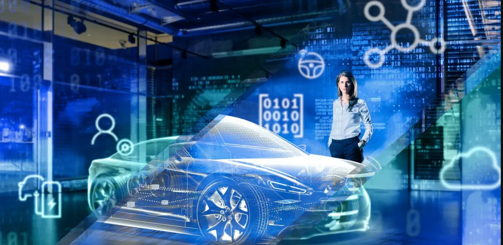

Developing automotive software is challenging because it connects embedded software with big IT systems, it’s developed in a global context in distributed teams, and it has one of the shortest cycle times of all industries. A modern car has 50 to 120 embedded microcontrollers and is connected over various external interfaces to a variety of cloud and infotainment technologies. Onboard software is in the 100‐MLOC range and is still growing exponentially. Automotive software product lines and variants are some of the largest and most complex in all industries. It’s said that the automobile is rapidly becoming a “computer on wheels.”
A normal car now contains 100 million lines of software code – that is ten times more than ten years ago.
Ten years ago there were still around ten million lines of software code integrated into a car, there are now around 100 million lines. The software for automated vehicles will even contain between 300 and 500 million lines of code. The number of software-intensive electronic systems in cars is therefore continuing to increase. “The market for such systems will grow by 15 percent annually until 2030,” says Hartung. But even if IT and automotive technology merge, remains a difference that is as simple as it is momentous: a smartphone can crash, but not have an accident – the car can. It moves equally in data and road traffic. "Especially when it comes to networked driving, 'safety first' applies," says Hartung.
The automotive IT must interact reliably and error-free with drive and brake systems at all times. "Here too, high-tech suppliers come into play who have mastered both: the electronics on board the car and the Internet of Things, in which the car will be networked in the future," explains Hartung. Such suppliers have a good chance of opening up the rapidly growing market for automotive IT. Test